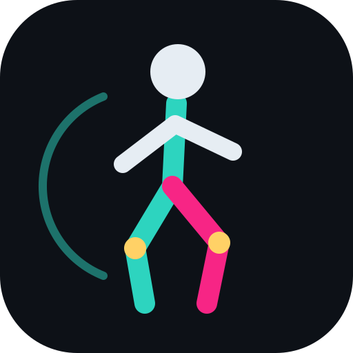

스마트폰 한 대 · 온디바이스 동작분석
영상 분석은 위에서 고른 검사 기준으로 진행됩니다. 갤럭시 '슬로우 모션' 영상도 됩니다.
아직 기록이 없습니다.
MediaPipe Pose Landmarker가 매 프레임 33개 신체 기준점의 2D 위치와 3D 추정 좌표를 계산하고, 이를 바탕으로 관절각을 구합니다. 모든 계산은 폰 안에서 이뤄지며 영상이 서버로 나가지 않습니다.
OpenCap(Stanford)은 iPhone 2대 이상과 클라우드 서버에서 OpenSim 역기구학·근골격 시뮬레이션을 돌려 관절 모멘트·근력까지 추정합니다. 이 앱은 폰 한 대로 즉시 결과를 내는 대신 근력·관절 모멘트는 계산하지 않으며, 단안 카메라 특성상 깊이 방향(카메라 쪽) 움직임과 회전 각도의 정확도가 낮습니다. 대신 TRC 파일을 내보내 PC의 OpenSim에서 역기구학을 이어서 할 수 있습니다.
측정값은 교육·선별용 추정치이며 임상 진단을 대신하지 않습니다.